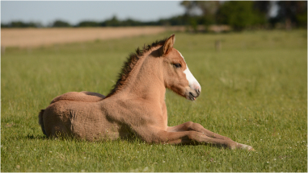
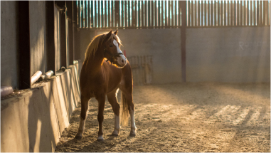
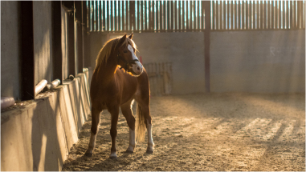

Видео

 

Арабская лошадь — одна из самых узнаваемых пород лошадей в мире.
Лошади выделяются своим интеллектом, своей близостью к человеку.
Они также заслуживают доверия и доставляют удовольствие, поэтому их часто выбирают для лечебной езды, выставок, шоу-прыжков.
Порода берет своё начало на Аравийском полуострове, и есть свидетельства его существования с 5000 лет назад.
Рост в холке
≈ 1,5 м
Вес взрослого
до 450 кг
Грудь в обхвате
≈ 176 см
Пясть в обхвате
≈ 19 см
Лошади арабской породы имеют уникальный вогнутый профиль, строение которого определяется особенностями скелета.
Арабские скакуны имеют небольшую голову с большими глазами. Шея высокая, с красивым изгибом. Грудь глубокая и широкая, спина также широкая. Отлично развитые, крепкие ноги увенчиваются прочными копытами.
Ещё один характерный признак лошадей арабской породы — «петушиный» хвост, который скакуны поднимают вверх во время быстрого бега.
Арабские лошади отличаются завидной выносливостью — при росте не более 1,53 м в холке они без труда несут на себе взрослых наездников
массивные лошади, обладающие крепкой конституцией, развитой мускулатурой
имеют среднюю по мощности конституцию тела, не очень высокий рост
тип, который сочетает в себе массивные формы кохейлана и сухость, внешнюю привлекательность сиглави
самые крупные представители арабской породы, имеют наименее ярко выраженную «восточность»
назад
5000 лет
Арабская — одна из древнейших пород лошадей. Арабские лошади появились в центральной части Аравийского полуострова, около 5000 лет назад в (IV–VII веках нашей эры).
Скакуны были запрещены к продаже в другие земли, в том числе и в Европу, под страхом смертной казни. Были запрещены скрещивания лошадей с другими породами, поэтому она на протяжении долгих веков развивается в чистоте.
Долгое время лошади являлись национальным достоянием арабов-кочевников.